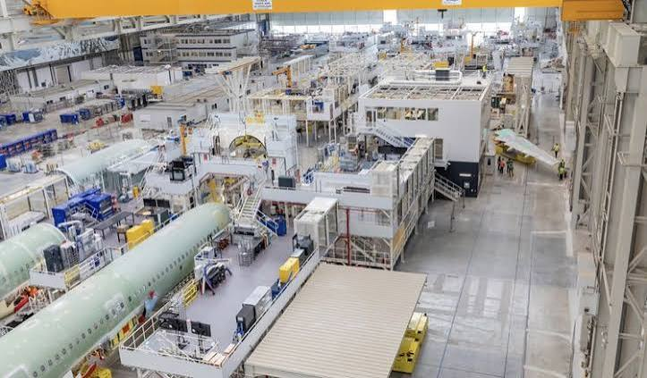

Le Savoir-faire
Aéronautique
Toulousain (Airbus)


⟹ Capitale Mondiale de l'Aéronautique ⟸
En 1970, les constructeurs français, allemands et britanniques créent le groupement Airbus Industrie pour concevoir un avion de ligne européen capable de rivaliser avec les géants américains. Toulouse, déjà rompue à la construction aéronautique depuis Dewoitine et Sud-Aviation, s'impose naturellement comme le siège du nouveau consortium et le lieu d'assemblage final de ses appareils.

Le premier appareil du consortium, l'A300B, sort des chaînes toulousaines en 1972. Le succès s'installe durablement avec l'A320 puis les familles A330, A340 et A350. En 1989, l'usine Clément Ader est bâtie à Colomiers pour l'assemblage des gros-porteurs A330 et A340 ; en 2004, le hall Jean-Luc Lagardère voit le jour sur la zone AéroConstellation, entièrement dédié à l'A380, avant d'être reconverti à partir de 2020 pour la famille A320/A321.
Cette nouvelle chaîne d'assemblage symbolise une nouvelle page de l'histoire d'Airbus.
— Responsable du programme A320 chez Airbus, à propos de la ligne de BlagnacAujourd'hui, le site toulousain rassemble près de 700 hectares et emploie plusieurs dizaines de milliers de salariés. Les tronçons de fuselage, fabriqués à Hambourg, Saint-Nazaire ou Broughton, convergent vers Toulouse à bord des Beluga avant d'être assemblés, testés en vol et livrés aux compagnies aériennes du monde entier.
Aviation civile de ligne : familles A320, A330 et A350, assemblées à Toulouse et livrées aux compagnies aériennes du monde entier.
Aéronautique de défense & espace : Airbus Defence & Space et Airbus Helicopters prolongent le savoir-faire toulousain vers le militaire et le spatial.
Écosystème de sous-traitance : plusieurs centaines d'entreprises (Stelia Aerospace, Latécoère, Daher, Sogeclair, Liebherr-Aerospace…) irriguent l'économie régionale.
Formation & recherche : ISAE-SUPAERO, ENAC et ONERA perpétuent, à quelques kilomètres des chaînes d'assemblage, la culture d'ingénierie aéronautique toulousaine.
L'agglomération toulousaine, et plus particulièrement le secteur de Blagnac-Colomiers, concentre l'essentiel des sites liés à la construction aéronautique contemporaine.
Toulouse-Blagnac où se trouve le siège d'Airbus et la zone AéroConstellation, cœur battant de l'assemblage final.
Colomiers qui accueille l'usine Clément Ader, dédiée à l'assemblage des gros-porteurs depuis 1989.
Blagnac où le Musée Aeroscopia expose des appareils emblématiques nés à Toulouse, de la Caravelle à l'A380.
Toulouse ville qui abrite le siège social d'Airbus ainsi que les grandes écoles d'ingénieurs aéronautiques de la région.